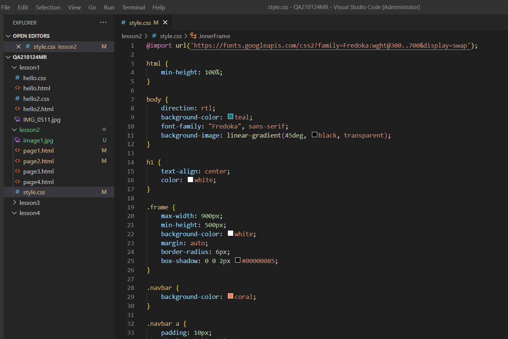

יליונות סגנון מדורגים (באנגלית: Cascading Style Sheets ובראשי תיבות: CSS) הם פורמט לעיצוב דפי אינטרנט. הגיליונות קובעים את עיצובם של תגים ב-HTML, XHTML וכל שפה דומה ל-XML לבניית אתרי אינטרנט.
CSS נוצר במטרה להפריד בין תוכן ומבנה דפי האינטרנט לבין עיצובם: עד ליצירת ה-CSS בידי קבוצת התקינה W3C ב-1995, נכתבו תוכן האתרים וסגנון העיצוב שלהם באותו דף HTML. כתוצאה מכך, הפך קוד ה-HTML למסובך ובלתי קריא, ושינויים עיצוביים באתר שלם דרשו מעבר דף אחר דף. באמצעות CSS ניתן למקם הגדרות עיצוב בקובץ יחיד, ששינוי בו ישתקף בבת אחת בכל הדפים העושים בו שימוש.
גליונות הסגנון נקראים "מדורגים" (באנגלית: Cascading) משום שהגדרות סגנון שונות נבנות זו על גבי זו. לדוגמה, יהיו הגדרות סגנון מסוימות החלות על כל האלמנטים מסוג "פסקה" , והגדרות אחרות התקפות רק לסוגים מסוימים של פיסקאות. במקרה של סתירה לגבי תכונת עיצוב (property) מסוימת, אחד הכללים הוא שההגדרה המתייחסת לסוג מסוים של פיסקאות תגבר על הגדרה המתייחסת לכל הפיסקאות משום שהיא ספציפית יותר, וישנם כללים נוספים. במקרה שאין עדיפות אחרת, ההגדרה המופיעה אחרונה תגבר.